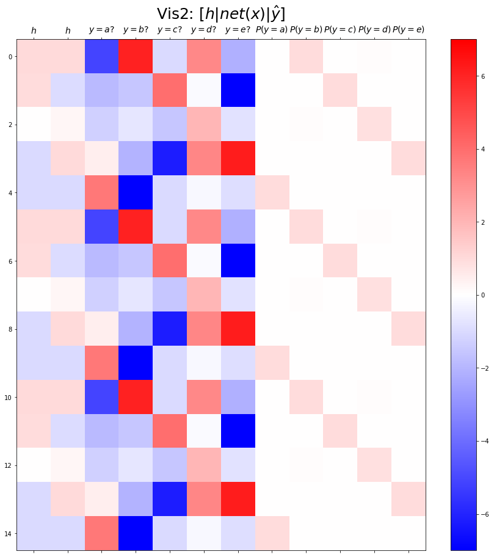

/home/hankang07/anaconda3/envs/py38/lib/python3.8/site-packages/tqdm/auto.py:22: TqdmWarning: IProgress not found. Please update jupyter and ipywidgets. See https://ipywidgets.readthedocs.io/en/stable/user_install.html
from .autonotebook import tqdm as notebook_tqdm순환신경망 intro(2)- abc예제, abdc예제, AbAcAd예제(1)
강의영상
https://youtube.com/playlist?list=PLQqh36zP38-wXdABtimM1pYK5TjPTBA6X
import
Define some functions
Exam2: abc
data
하나의 은닉노드를 이용한 풀이 - 억지로 성공
- 데이터정리
mapping = {'a':0,'b':1,'c':2}
x = torch.tensor(f(txt_x, mapping))
y = torch.tensor(f(txt_y, mapping))
x[:5],y[:5](tensor([0, 1, 2, 0, 1]), tensor([1, 2, 0, 1, 2]))- 학습
tensor([[7.7743e-02, 8.4444e-01, 7.7818e-02],
[5.2772e-05, 7.6005e-02, 9.2394e-01],
[9.2247e-01, 7.7472e-02, 5.5484e-05],
[7.7743e-02, 8.4444e-01, 7.7818e-02],
[5.2772e-05, 7.6005e-02, 9.2394e-01]], grad_fn=<SliceBackward0>)tensor([[-0.0147],
[ 0.9653],
[-0.9896],
[-0.0147],
[ 0.9653]], grad_fn=<SliceBackward0>)- 결과해석
처음에 두 layer를 통과시킨 값들이 어떤 값을 가질지 조사해보자.
2번째 layer(hidden layer)까지 통과하고 한번 더 linear transform을 거치게 되면 여기 있는 하나의 값이 3개로 잘라지는데 잘라진 3개를 각각 플랏하면 다음과 같다.
tensor([[-1.4755, 0.9098, -1.4745],
[-6.0618, 1.2108, 3.7086],
[ 3.0875, 0.6104, -6.6312],
[-1.4755, 0.9098, -1.4745],
[-6.0618, 1.2108, 3.7086]], grad_fn=<SliceBackward0>)- \(x= a,b,c,a,b,c\dots\)
- \(y = b,c,a,b,c,a\dots\)
- 주황색 선의 학습상태가 썩 마음에 들지 않는다. 초록색은 확실하게 초록색, 파란색은 확실하게 파란색인데 주황색은 딱히 그런게 없다.
- 약간 그런느낌 파란색도 아니고 초록색도 아니니까 얘(주황)로 하지

tensor([[7.7743e-02, 8.4444e-01, 7.7818e-02],
[5.2772e-05, 7.6005e-02, 9.2394e-01],
[9.2247e-01, 7.7472e-02, 5.5484e-05],
[7.7743e-02, 8.4444e-01, 7.7818e-02],
[5.2772e-05, 7.6005e-02, 9.2394e-01]])- 억지로 맞추고 있긴한데 파라메터가 부족해보인다.
- 결과시각화1 (위와 똑같은 그림임)
fig,ax = plt.subplots(1,3,figsize=(15,5))
ax[0].plot(hidden[:9],'--o'); ax[0].set_title('$h:=(tanh \circ linr_1)(x)$', size=15)
ax[1].plot(net(x).data[:9],'--o'); ax[1].set_title('$net(x)(linr_2 \circ tanh \circ linr_1)(x)$',size=15)
ax[2].plot(yhat[:9],'--o'); ax[2].set_title('$\hat{y}$ = softmax$(net(x))$',size=15);
fig.suptitle(r"Vis1: $h, net(x),\hat{y}$", size=20)
plt.tight_layout()(tensor([[-0.0147],
[ 0.9653],
[-0.9896],
[-0.0147],
[ 0.9653],
[-0.9896],
[-0.0147],
[ 0.9653],
[-0.9896]]),
tensor([[-4.6804, 0.3071, 5.2894]], grad_fn=<PermuteBackward0>),
tensor([-1.5440, 0.9143, -1.3970]))- (파랑, 주황, 초록) 순서로 그려짐
- 파랑 = hidden * (-4.6804) + (-1.5440)
- 주황 = hidden * (0.3071) + (0.9143) ## 상대적으로 weight, bias가 어정쩡
- 초록 = hidden * (5.2894) + (-1.3970)
초록색과 파란색에 대한 클래스는 확실하게 특징을 파악해서 잘 학습한 것 같은데 주황색은 그냥 초록색과 파란색이 아니기 때문에 주황색인 느낌이다.
- 내부동작을 잘 뜯어보니까 사실 엉성해. 엄청 위태위태하게 맞추고 있었음.
- weight: 파랑과 초록을 구분하는 역할을 함.
- weight + bias: 뭔가 교묘하게 에매한 주황값을 만들어서 에매하게 ’b’라고 나올 확률을 학습시킨다. \(\to\) 사실 학습하는 것 같지 않고 때려맞추는 느낌, 쓸 수 있는 weight가 한정적이라서 생기는 현상 (양수, 음수, 0)
참고: torch.nn.Linear()의 비밀?
- 사실 \(y=x\bf{W}+b\) 꼴에서의 \(\bf{W}\)와 \(b\)가 저장되는게 아니다.
- \(y =x\bf{A}^T+b\)꼴에서의 \(\bf{X}\)와 \(b\)가 저장된다.
- \(\bf{W}=\bf{A}^T\) 인 관계에 있으므로 l1.weight가 우리자 생각하는 \(\bf{W}\)로 해석하려면 사실 transpose를 취해줘야 한다.
왜 이렇게..?
- 계산의 효율성 때문 (numpy의 구조를 알아야함)
- \(x,y\)는 수학적으로는 col-vec이지만 메모리에 저장할 시에는 row-vec로 해석하는 것이 자연스럽다. (사실 메모리는 격자모양으로 되어있지 않음)
- 결과시각화2
똑같은 내용을 다른방식으로 시각화 한 것임.
plt.matshow(combined[:15], vmin=-15, vmax=15, cmap='bwr')
plt.xticks(range(7), labels=[r'$h$',r'$y=a?$',r'$y=b?$',r'$y=c?$',r'$P(y=a)$',r'$P(y=b)$',r'$P(y=c)$'], size=14)
plt.colorbar()
plt.gcf().set_figwidth(15)
plt.gcf().set_figheight(15)
plt.title(r"Vis2: $[h | net(x) | \hat{y}]$", size=25)Text(0.5, 1.0, 'Vis2: $[h | net(x) | \\hat{y}]$')softmax를 취하기 전단계인 net(x)(2열4열)에서 가장 빨간색인 부분만 살아남아 빨간색(57열)이 되고, 나머지 부분은 흰색으로 바뀌게 된다.
위의 그림에서 첫번째 행에서 2~4번째 열을 보면 에매한 파란색, 에매한 빨간색으로 b가 되는 느낌.
Exam3: abcd
data
하나의 은닉노드를 이용한 풀이 - 억지로 성공
- 데이터 정리
mapping = {'a':0,'b':1,'c':2,'d':3}
x = torch.tensor(f(txt_x,mapping))
y = torch.tensor(f(txt_y,mapping))
x[:5],y[:5](tensor([0, 1, 2, 3, 0]), tensor([1, 2, 3, 0, 1]))- 학습
- 결과시각화1
fig,ax = plt.subplots(1,3,figsize=(15,5))
ax[0].plot(hidden[:9],'--o'); ax[0].set_title('$h:=(tanh \circ linr_1)(x)$',size=15)
ax[1].plot(net(x).data[:9],'--o'); ax[1].set_title('$net(x):=(linr_2 \circ tanh \circ linr_1)(x)$',size=15)
ax[2].plot(yhat[:9],'--o'); ax[2].set_title('$\hat{y}$ = softmax$(net(x))$',size=15);
fig.suptitle(r"Vis1: $h,net(x),\hat{y}$",size=20)
plt.tight_layout()- 주황색과 빨간색을 특징을 잘 파악했는데 녹색과 파란색은 좀 에매하게 특징을 파악했지만 어쩌다보니 결과는 잘 나옴.
- 결과시각화2
plt.matshow(combined[:15],vmin=-15,vmax=15,cmap='bwr')
plt.xticks(range(9), labels=[r'$h$',r'$y=a?$',r'$y=b?$',r'$y=c?$',r'$y=d?$',r'$P(y=a)$',r'$P(y=b)$',r'$P(y=c)$',r'$P(y=d)$'],size=14)
plt.colorbar()
plt.gcf().set_figwidth(15)
plt.gcf().set_figheight(15)
plt.title(r"Vis2: $[h | net(x) | \hat{y}]$",size=25)Text(0.5, 1.0, 'Vis2: $[h | net(x) | \\hat{y}]$')두개의 은닉노드를 이용한 풀이 - 깔끔한 성공
- 데이터정리
mapping = {'a':0,'b':1,'c':2,'d':3}
x = torch.tensor(f(txt_x,mapping))
y = torch.tensor(f(txt_y,mapping))
x[:5],y[:5](tensor([0, 1, 2, 3, 0]), tensor([1, 2, 3, 0, 1]))- 학습
- 결과시각화1
fig,ax = plt.subplots(1,3,figsize=(15,5))
ax[0].plot(hidden[:9],'--o'); ax[0].set_title('$h:=(tanh \circ linr_1)(x)$',size=15)
ax[1].plot(net(x).data[:9],'--o'); ax[1].set_title('$net(x):=(linr_2 \circ tanh \circ linr_1)(x)$',size=15)
ax[2].plot(yhat[:9],'--o'); ax[2].set_title('$\hat{y}$ = softmax$(net(x))$',size=15);
fig.suptitle(r"Vis1: $h,net(x),\hat{y}$",size=20)
plt.tight_layout()(맨 왼쪽 그림) 2개의 노드를 썼으니까 파랑이와 주황색선 두개가 보인다. - h dimension \((n,1)\to(n,2)\) - 주황이가 확실히 1, -1 호불호가 갈려서 학습이 된다. - 파랑이도 1, -1 두가지로 갈려서 학습이 된다.
맨 왼쪽그림에서 적당한 선형변환을 통해 2번째 그림을 만들어야 하고, 여기서 3번째 그림을 만들어야 한다. - 가장 오른쪽 그림의 출력결과만 봐도 매우 깔끔하게 나온다! - 높은 확률로 깔끔하게 예측하고 있음을 볼 수 있다.
- 결과시각화2
plt.matshow(combined[:15],vmin=-7,vmax=7,cmap='bwr')
plt.xticks(range(10), labels=[r'$h$',r'$h$',r'$y=a?$',r'$y=b?$',r'$y=c?$',r'$y=d?$',r'$P(y=a)$',r'$P(y=b)$',r'$P(y=c)$',r'$P(y=d)$'],size=14)
plt.colorbar()
plt.gcf().set_figwidth(15)
plt.gcf().set_figheight(15)
plt.title(r"Vis2: $[h | net(x) | \hat{y}]$",size=25)Text(0.5, 1.0, 'Vis2: $[h | net(x) | \\hat{y}]$')- hidden layer는 \(-1\sim 1\) 값을 가질 수 있다.
- 파,빨 \(\to\) b
- 파,파 \(\to\) c
- 빨,파 \(\to\) d
- 빨,빨 \(\to\) a
이런식으로 hidden layer에 있는 특징들도 결과를 해석하기에 좋은 형태로 잘 학습되어 있다.
빨간색일수록 근거가 뚜렷함. 특징이 그전에 비해서 굉장히 명확하게 학습이 되고 있다는 것을 알 수 있다.
그 전에는 b와 d는 특징을 잘 파악하고 있는데 a,c는 약간 에매했지만 이번에는 a,b,c,d의 특징들을 잘 이해하고 맞추는 것처럼 느껴진다.
Exam4: AbAcAd
data
두개의 은닉노드를 이용한 풀이 - 실패
- 데이터정리
mapping = {'A':0, 'b':1,'c':2,'d':3}
x = torch.tensor(f(txt_x, mapping))
y = torch.tensor(f(txt_y, mapping))
x[:5], y[:5](tensor([0, 1, 0, 2, 0]), tensor([1, 0, 2, 0, 3]))- 학습
- 결과시각화1
fig,ax = plt.subplots(1,3,figsize=(15,5))
ax[0].plot(hidden[:9],'--o'); ax[0].set_title('$h:=(tanh \circ linr_1)(x)$',size=15)
ax[1].plot(net(x).data[:9],'--o'); ax[1].set_title('$net(x):=(linr_2 \circ tanh \circ linr_1)(x)$',size=15)
ax[2].plot(yhat[:9],'--o'); ax[2].set_title('$\hat{y}$ = softmax$(net(x))$',size=15);
fig.suptitle(r"Vis1: $h,net(x),\hat{y}$",size=20)
plt.tight_layout()- 결과시각화2
plt.matshow(combined[:15],vmin=-5,vmax=5,cmap='bwr')
plt.xticks(range(10), labels=[r'$h$',r'$h$',r'$y=A?$',r'$y=b?$',r'$y=c?$',r'$y=d?$',r'$P(y=A)$',r'$P(y=b)$',r'$P(y=c)$',r'$P(y=d)$'],size=14)
plt.colorbar()
plt.gcf().set_figwidth(15)
plt.gcf().set_figheight(15)
plt.title(r"Vis2: $[h | net(x) | \hat{y}]$",size=25)Text(0.5, 1.0, 'Vis2: $[h | net(x) | \\hat{y}]$')- \(x = \text{AbAcAd}\dots\)
- \(y = \text{bAcAdA}\dots\)
결국 A의 자리만 잘 찾고 b,c,d끼리는 구분을 잘 못하는 느낌이다. (1/3확률로 찍는 느낌)
히든노드를 2개로 하고 잘 한 것 같은데 왜 이런 결과가 나올까?
데이터를 살펴보자. 보니까 A->b, A->c, A->d ??? A다음에 뭐가 나올지 맞출 수가 없다.
인간은 추론해서 맞출 수 있겠지만 컴퓨터는 데이터를 바로 직전에 있는 character만 보고 다음을 예측하게끔 우리가 데이터셋을 구성해서 x,y로 줬다.
그런데 사실은 바로 직전이 아니고 그 직전에 직전도 보고 뭔가 이렇게 좀 여러개를 이제 봐야한다는 것이다.
해결책? 한칸을 더 보게하면 된다. but 엄밀히 말하면 해결이 아님!
실패
- 실패를 해결하는 순진한 접근방식: 위 문제를 해결하기 위해서는 아래와 같은 구조로 데이터를 다시 정리하면 될 것이다.
| x | y |
|---|---|
| A,b | A |
| b,A | c |
| A,c | A |
| c,A | d |
| A,d | A |
| d,A | b |
| A,b | A |
| b,A | c |
| \(\cdots\) | \(\cdots\) |
- 순진한 접근방식의 비판
- 결국 정확하게 직전 2개의 문자를 보고 다음 문제를 예측하는 구조
- 만약에 직전 3개의 문자를 봐야하는 상황이 된다면 또 다시 코드를 수정해야함.
- 그리고 실전에서는 직전 몇 개의 문자를 봐야하는지 모름.
앞에있는 2개, 3개, 4개.. 이러한 구조를 반영할 수 있는 새로운 네트워크를 고안해냈는데 그것은 바로 순환신경망이다.
지금까지는 순환신경망의 필요성에 대해 알아보았던 것!
이것에 대한 해결책은 순환신경망이다.(NEXT)
숙제
주어진 자료가 다음과 같다고 하자.
아래 코드를 변형하여 적절한 네트워크를 설계하고 위의 자료를 학습하라. (깔끔한 성공을 위한 최소한의 은닉노드를 설정할 것.)
net = torch.nn.Sequential(
torch.nn.Embedding(num_embeddings=??,embedding_dim=??),
torch.nn.Tanh(),
torch.nn.Linear(in_features=??,out_features=??)
)도전1 (은닉노드 2개)
mapping = {'a':0,'b':1,'c':2,'d':3,'e':4}
x = torch.tensor(f(txt_x,mapping))
y = torch.tensor(f(txt_y,mapping))
x[:5],y[:5](tensor([0, 1, 2, 3, 4]), tensor([1, 2, 3, 4, 0]))- 결과시각화1
fig,ax = plt.subplots(1,3,figsize=(15,5))
ax[0].plot(hidden[:9],'--o'); ax[0].set_title('$h:=(tanh \circ linr_1)(x)$',size=15)
ax[1].plot(net(x).data[:9],'--o'); ax[1].set_title('$net(x):=(linr_2 \circ tanh \circ linr_1)(x)$',size=15)
ax[2].plot(yhat[:9],'--o'); ax[2].set_title('$\hat{y}$ = softmax$(net(x))$',size=15);
fig.suptitle(r"Vis1: $h,net(x),\hat{y}$",size=20)
plt.tight_layout()
- 결과시각화2
plt.matshow(combined[:15],vmin=-7,vmax=7,cmap='bwr')
plt.xticks(range(12), labels=[r'$h$',r'$h$',r'$y=a?$',r'$y=b?$',r'$y=c?$',r'$y=d?$', r'$y=e?$',r'$P(y=a)$',r'$P(y=b)$',r'$P(y=c)$',r'$P(y=d)$',r'$P(y=e)$'],size=14)
plt.colorbar()
plt.gcf().set_figwidth(15)
plt.gcf().set_figheight(15)
plt.title(r"Vis2: $[h | net(x) | \hat{y}]$",size=25)Text(0.5, 1.0, 'Vis2: $[h | net(x) | \\hat{y}]$')
- 실패
도전2 ( 은닉노드 3개)
mapping = {'a':0,'b':1,'c':2,'d':3,'e':4}
x = torch.tensor(f(txt_x,mapping))
y = torch.tensor(f(txt_y,mapping))
x[:5],y[:5](tensor([0, 1, 2, 3, 4]), tensor([1, 2, 3, 4, 0]))- 결과시각화1
fig,ax = plt.subplots(1,3,figsize=(15,5))
ax[0].plot(hidden[:9],'--o'); ax[0].set_title('$h:=(tanh \circ linr_1)(x)$',size=15)
ax[1].plot(net(x).data[:9],'--o'); ax[1].set_title('$net(x):=(linr_2 \circ tanh \circ linr_1)(x)$',size=15)
ax[2].plot(yhat[:9],'--o'); ax[2].set_title('$\hat{y}$ = softmax$(net(x))$',size=15);
fig.suptitle(r"Vis1: $h,net(x),\hat{y}$",size=20)
plt.tight_layout()- 결과시각화2
plt.matshow(combined[:15],vmin=-5,vmax=5,cmap='bwr')
plt.xticks(range(13), labels=[r'$h$',r'$h$',r'$h$',
r'$y=A?$',r'$y=b?$',r'$y=c?$',r'$y=d?$',r'$y=e?$',
r'$P(y=A)$',r'$P(y=b)$',r'$P(y=c)$',r'$P(y=d)$',r'$P(y=e)$'],size=13)
plt.colorbar()
plt.gcf().set_figwidth(15)
plt.gcf().set_figheight(15)
plt.title(r"Vis2: $[h | net(x) | \hat{y}]$",size=25)Text(0.5, 1.0, 'Vis2: $[h | net(x) | \\hat{y}]$')a,b,c,d,e를 표현함에 있어서 3개의 은닉노드면 충분하다.
1개의 은닉노드 \(\to\) 2개의 문자를 표현할 수 있음
2개의 은닉노드 \(\to\) 4개의 문자를 표현할 수 있음
3개의 은닉노드 \(\to\) 8개의 문자를 표현할 수 있음